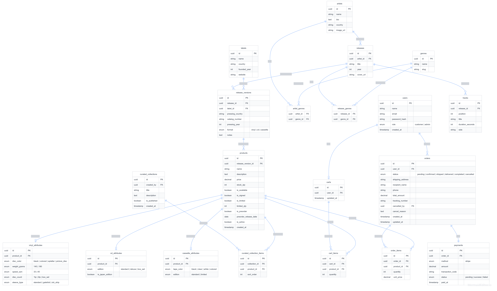

Cat Music Shop Documentation
ERD Analysis
Entity decisions, table groups, relationships, and business rules.
ERD Analysis — Vinyl Shop
General Conventions
| Symbol | Meaning |
|---|---|
PK |
Primary Key — Unique identifier for each row |
FK |
Foreign Key — Reference to another table |
uuid |
Universally Unique Identifier, safer than auto-incrementing integers |
enum |
Fixed set of values, e.g., vinyl / cd / cassette |
unique |
Cannot be duplicated within the table |
nullable |
Allows empty values |
Candidate Entity Analysis from Overview
Source: docs/overview.md. Bold terms in the overview are treated as entity-candidate keywords, then classified into tables, enums/value objects, query concepts, or side effects.
Accepted Entity Candidates
| Overview candidate keyword | ERD decision | Reason |
|---|---|---|
| User, Customer, Admin | users table + role enum |
Customer/Admin are roles of a registered user, not separate tables. |
| Artist | artists table |
Independently managed catalog entity with biography, country, image, and release relationships. |
| Genre | genres table + junction tables |
Reused by many artists/releases; needs canonical names and slugs. |
| Album, Single, EP, Original Release | releases table |
These are release types/semantic categories of the same catalog concept. |
| Edition, Pressing, Specific Edition | release_versions table |
Physical releases can have many country/year/label/catalog-number variants. |
| Track, Tracklist | tracks table |
Track ordering and duration belong to a release. |
| Record Label, Label | labels table |
Label data is reused by many release versions. |
| Product, Physical Media | products table |
Sellable SKU with price, stock, availability, preorder/limited flags. |
| Vinyl, CD, Cassette, Attributes | vinyl_attributes, cd_attributes, cassette_attributes |
Format-specific attributes differ enough to deserve separate structures. |
| Curated Collection, Collection | curated_collections, curated_collection_items |
Admin-managed product groupings with ordering. |
| Cart | carts, cart_items |
Customer shopping state with multiple products and quantities. |
| Order | orders, order_items |
Checkout creates a durable order snapshot and item snapshot. |
| Payment, Transaction, Stripe | payments table |
Payment status and external transaction code must be stored for reconciliation. |
| Business Events | messages table |
Reliable outbox/inbox processing is an infrastructure persistence concern. |
| Action Logs | admin_activity_logs table |
Admin audit trail is stored separately from business entities. |
| Login / Logout, Google Auth | refresh_tokens table |
Long-lived auth sessions require persisted hashed refresh tokens. |
Note: The detailed sections below focus on storefront/business ERD tables. Support tables such as refresh_tokens, admin_activity_logs, and messages are acknowledged here because the overview implies them, but they are not expanded in the core business ERD section.
Non-Entity or Deferred Candidates
| Overview candidate keyword | ERD decision | Reason |
|---|---|---|
| Guest | No table | Guest is an unauthenticated request state, not persisted. |
| Role | Enum/value | Only fixed roles are needed: customer/admin. No role-management feature exists. |
| Format, Product Type, Payment Method, Order Status, Payment Status | Enum/value | Closed value sets used for validation and branching. |
| Country, Price, Decade, Release Date, Stock, Inventory | Fields or derived filters | These describe entities; they are not independent lifecycle objects in this system. |
| Catalog, Music Catalog | Module/bounded context | Organizes related entities but does not become a table. |
| Revenue Reports | Query/report model | Revenue is calculated from orders/payments; no separate report table is required. |
| Notifications, Emails, Notification History | Side effect, no table | Current design sends email from application handlers and does not store notification logs. |
| Review | Deferred candidate | Mentioned in overview, but no current review entity/table exists. Add only if product reviews become an implemented feature. |
| Wantlist | Removed/deferred candidate | Mentioned in inventory rules, but current model has no wantlist table. Reintroduce only if back-in-stock notification becomes a feature. |
Section 1 — User Roles
Number of entities: 1
users — Users
Stores information for all registered users. Guests do not have a row in the DB — they exist at the session/request layer, not the data layer.
| Field | Type | Notes |
|---|---|---|
id | uuid | PK |
name | string | |
email | string | unique |
password_hash | string | nullable (null if Google Login) |
auth_provider | enum | local | google |
provider_id | string | nullable (Google ID) |
role | enum | customer | admin |
created_at | timestamp |
Field explanations:
auth_providerdefaults tolocal. If using Google,password_hashwill be empty.provider_idstores the unique identifier from Google (subject) to avoid total dependence on email (which can change).rolehas only 2 values because Guests do not exist in the DB. A Guest's entire set of permissions is "no JWT" — handled at the API layer, not the schema.password_hash— stores the result of hashing (bcrypt/argon2), never plain text passwords. Even admins cannot read the actual password.- No separate
rolesorpermissionstables are needed because the system has only 2 fixed roles with static permissions. Adding more tables would be over-engineering.
Relationships with other tables:
users ──< orders
users ──| carts (1-1)Section 2 — Music Catalog
Number of entities: 6 + 2 junction tables = 8 tables
The Catalog is a pure music database — completely separate from sales logic. It serves as the foundation for AI operations and accurate product information management.
Data hierarchy:
Artist → Release → ReleaseVersion → Product (Section 3)
└→ Track
Label → ReleaseVersion
Genre ↔ Artist (many-to-many)
Genre ↔ Release (many-to-many)artists — Artists
Stores information about people/bands. An artist can have multiple albums and multiple genres.
| Field | Type | Notes |
|---|---|---|
id | uuid | PK |
name | string | "Pink Floyd", "Miles Davis" |
slug | string | "pink-floyd" |
bio | text | nullable (long biography) |
country | string | nullable ("UK", "US") |
image_url | string | nullable (path to image) |
Explanations:
biouses thetexttype instead ofstring(varchar) because biographies can be very long and should not be limited in length.image_urlstores the path to the image file (S3, CDN...). The DB does not store binary files because it increases DB size, slows down backups, and makes queries heavy.countryis stored directly instead of being separated into acountriestable because there is no business requirement to manage a list of countries — it is only used for filtering.
genres — Music Genres
Standardized list of music genres. Separated into its own table to avoid typos and for centralized management.
| Field | Type | Notes |
|---|---|---|
id | uuid | PK |
name | string | unique ("Progressive Rock") |
slug | string | unique ("progressive-rock") |
Explanations:
namemust beuniqueto prevent "Rock" and "rock" from coexisting.slugis a URL-safe version of the name — no spaces, no special characters. Used when filtering/products?genre=progressive-rock. The frontend does not need to encode spaces.- Reason for a separate table instead of storing directly in
artists: if you storegenres = "Rock"directly inartists, when you want to rename the genre or add a slug, you have to update all related rows. With a separate table, you only update 1 row ingenres.
releases — Original Releases
Artistic information of an album/EP/single. This is the "original" — before considering where it was pressed, in what year, or by which label.
| Field | Type | Notes |
|---|---|---|
id | uuid | PK |
artist_id | uuid | FK → artists.id |
title | string | "Dark Side of the Moon" |
slug | string | SEO / URL friendly |
description | text | nullable |
year | int | 1973 (original release year) |
cover_url | string | nullable (original cover) |
Explanations:
yearis the original release year, not the repressing year. The repressing year is inrelease_versions.pressing_year.- Why separate
releasesfromrelease_versions? An album can have dozens of repressings in many countries. If merged, artistic information (name, year, tracklist) would be repeated dozens of times. By separating them, artistic info is stored once, and pressing versions only store physical info.
release_versions — Specific Versions
Each time an album is pressed, it is a separate release_version. This is the entity that links directly to products.
| Field | Type | Notes |
|---|---|---|
id | uuid | PK |
release_id | uuid | FK → releases.id |
label_id | uuid | FK → labels.id |
pressing_country | string | nullable ("US", "Japan") |
catalog_number | string | nullable ("SHVL 804") |
pressing_year | int | nullable (1973, 1976, 2011) |
format | enum | vinyl | cd | cassette |
notes | text | nullable ("OBI strip") |
Explanations:
catalog_numberis the identifier set by the label, used for lookup and authenticity verification. Important for collectors.formatis here because format is an attribute of the pressing — Japan OBI 1976 defines it as Vinyl, not CD. This is the source of truth for format.notesuses free text instead of an enum because version characteristics are very diverse and hard to list exhaustively beforehand.
Real-world example — same release, 3 versions:
| pressing_country | pressing_year | label | notes |
|---|---|---|---|
| US | 1973 | Harvest | First US pressing |
| Japan | 1976 | Toshiba EMI | OBI strip |
| UK | 2011 | Parlophone | 2011 Remaster |
Three rows in release_versions, only 1 row in releases.
labels — Record Labels
The company that releases the record. A label can release many versions of many different albums.
| Field | Type | Notes |
|---|---|---|
id | uuid | PK |
name | string | "Harvest Records" |
country | string | "UK", "Japan" |
founded_year | int | nullable |
website | string | nullable |
Explanations:
- Why is
labelsits own entity instead of storing the label name directly inrelease_versions? Because manyrelease_versionsshare the same label. "Harvest Records" has released hundreds of albums. If storing the name directly, when you need to add info about the label (website, country), you have to update hundreds of rows. By separating it, you only update 1 row inlabels.
tracks — Tracklist
Tracklist of an album. Attached to releases — not to release_versions because different pressings still have the same original tracklist.
| Field | Type | Notes |
|---|---|---|
id | uuid | PK |
release_id | uuid | FK → releases.id |
position | int | 1, 2, 3... |
title | string | "Speak to Me" |
duration_seconds | int | 168 |
side | string | nullable ("A", "B") |
Explanations:
duration_secondsstores an integer instead of a string"3:20"because it's easier to calculate total album duration, sort, and filter. Displaying"3:20"is the frontend's job —Math.floor(168/60) + ":" + (168%60).sideis used for vinyl with Side A and Side B. Tracks 1-6 on Side A, tracks 7-12 on Side B. For CDs and cassettes,side = null.- Why attach to
releasesinstead ofrelease_versions? Because the tracklist is artistic info and does not change with the pressing. Japan OBI 1976 and US First Press 1973 have the same tracklist.
Junction table: artist_genres
Links artists and genres in a many-to-many relationship. One artist has many genres, and one genre has many artists.
| Field | Type | Notes |
|---|---|---|
artist_id | uuid | FK → artists.id |
genre_id | uuid | FK → genres.id |
Junction table: release_genres
Links releases and genres. Separate from artist_genres because a release can sometimes belong to a different genre than the artist.
| Field | Type | Notes |
|---|---|---|
release_id | uuid | FK → releases.id |
genre_id | uuid | FK → genres.id |
Why separate from artist_genres?
Miles Davis is Jazz, but the album Bitches Brew is Jazz Fusion — a specific genre for that release that doesn't represent the entire artist. If merged, it would be impossible to distinguish "artist's genre" from "this specific album's genre".
Section 3 — Products & Sales
Number of entities: 7 (including 1 junction table + 3 attribute tables)
This section is the bridge between the music catalog and the sales system.
release_versions → products
↑
(Price and stock live here)products — Products
A product represents a release_version that the shop is selling. Currently, each Product is an independent SKU.
| Field | Type | Notes |
|---|---|---|
id | uuid | PK |
release_version_id | uuid | FK → release_versions.id |
name | string | "Pink Floyd — The Dark Side..." |
slug | string | SEO / URL friendly |
cover_url | string | nullable (product image) |
description | text | nullable |
price | decimal | sale price |
stock_qty | int | default 0 |
is_available | boolean | default true |
is_signed | boolean | default false |
is_limited | boolean | default false |
limited_qty | int | nullable |
is_preorder | boolean | default false |
preorder_release_date | date | nullable |
is_active | boolean | default true |
created_at | timestamp |
Explanations:
priceandstock_qtyare now stored directly inproducts. The system has removed the Variant layer to simplify SKU management.Formatis no longer in theproductstable. This information is retrieved directly fromrelease_versions.formatto ensure data consistency (Single Source of Truth).- Specific attributes for each format (disc color, weight...) are separated into 3 extension tables (
vinyl_attributes,cd_attributes,cassette_attributes) and linked directly toproduct_id. is_active = falseis used when hiding a product instead of deleting it — products should not be deleted when there are Pending/Confirmed orders.
Relationship with extension tables (1-1):
products ──| vinyl_attributes
products ──| cd_attributes
products ──| cassette_attributesA product belongs to exactly 1 format, so only 1 corresponding extension table exists.
vinyl_attributes — Vinyl Attributes
| Field | Type | Notes |
|---|---|---|
id | uuid | PK |
product_id | uuid | FK → products.id (unique) |
disc_color | enum | black | colored | splatter... |
weight_grams | enum | 140 | 180 |
speed_rpm | enum | 33 | 45 |
disc_count | enum | 1lp | 2lp | box_set |
sleeve_type | enum | standard | gatefold | obi_strip |
Explanations:
uniqueonproduct_idenforces a 1-1 relationship — a product cannot have 2 vinyl_attributes rows.- All use
enuminstead of freestringso the DB rejects invalid values. You cannot storeweight_grams = "180g"(string) orspeed_rpm = 78(invalid). disc_countdistinguishes between 1LP, 2LP, Box set.
cd_attributes — CD Attributes
| Field | Type | Notes |
|---|---|---|
id | uuid | PK |
product_id | uuid | FK → products.id (unique) |
edition | enum | standard | deluxe | box_set |
is_japan_edition | boolean | default false |
Explanations:
editiondistinguishes between Standard (original tracklist) and Deluxe/Expanded (with bonus tracks).is_japan_editionis a separate boolean because Japan editions are a specific concept in the music market — often featuring exclusive bonus tracks, OBI strips, higher prices, and are specifically sought after by collectors.
cassette_attributes — Cassette Attributes
| Field | Type | Notes |
|---|---|---|
id | uuid | PK |
product_id | uuid | FK → products.id (unique) |
tape_color | enum | black | clear | white | colored |
edition | enum | standard | limited |
Explanations:
tape_coloris an important visual attribute for cassette collectors — tape color directly affects price and rarity.edition = limitedcombined withproducts.is_limitedfor a double-check:is_limitedis a business rule (selling limit),editionis the manufacturer's marketing info.
curated_collections — Themed Collections
Admins create editorial collections to group products by theme. E.g., Horror Soundtracks, Vietnam New Wave.
| Field | Type | Notes |
|---|---|---|
id | uuid | PK |
created_by | uuid | FK → users.id (admin) |
title | string | "Horror Soundtracks" |
description | text | nullable |
is_published | boolean | default false |
created_at | timestamp |
Explanations:
is_publishedallows admins to prepare a collection and publish it when ready, rather than displaying it immediately upon creation.created_bytracks which admin created it, used for audit logs.
Junction table: curated_collection_items
Links curated_collections and products. A collection has many products, and a product can appear in many collections.
| Field | Type | Notes |
|---|---|---|
id | uuid | PK |
collection_id | uuid | FK → curated_collections.id |
product_id | uuid | FK → products.id |
sort_order | int | display order |
Explanations:
- Uses a separate
idinstead of a composite key because there is an additionalsort_order— a composite key cannot describe order. sort_orderallows admins to arrange products in a collection as desired, independent of insertion order.
Section 4 — Order Process
Number of entities: 5
Order Lifecycle:
Pending → Confirmed → Shipped → Delivered → Completed
↓
Cancelledcarts — Shopping Carts
Each customer has exactly 1 shopping cart. The cart is persistent (not lost when closing the tab).
| Field | Type | Notes |
|---|---|---|
id | uuid | PK |
user_id | uuid | FK → users.id (unique) |
updated_at | timestamp |
Explanations:
user_idhas auniqueconstraint to ensure a user has exactly 1 cart.totalis not stored incartsbecause the total amount is always calculated dynamically fromcart_items— avoiding data discrepancy when prices change.- Guests do not have a cart in the DB — if needed, store temporarily in localStorage on the frontend.
cart_items — Cart Items
| Field | Type | Notes |
|---|---|---|
id | uuid | PK |
cart_id | uuid | FK → carts.id |
product_id | uuid | FK → products.id |
quantity | int | default 1 |
orders — Orders
| Field | Type | Notes |
|---|---|---|
id | uuid | PK |
user_id | uuid | FK → users.id |
status | enum | pending | confirmed | shipped... |
shipping_address | string | snapshot |
recipient_name | string | snapshot |
phone | string | snapshot |
note | text | nullable |
total_amount | decimal | snapshot |
tracking_number | string | nullable |
cancelled_by | uuid | nullable (FK → users.id) |
cancel_reason | text | nullable |
created_at | timestamp | |
updated_at | timestamp |
Explanations:
shipping_address,recipient_name,phoneare snapshots — copied from the user profile at the time of order. If the user changes their address later, old orders are not affected.total_amountis also a snapshot — the total at the time of ordering. It is not recalculated fromorder_itemslater because prices may have changed.cancelled_byrecords who cancelled — customer or admin — for audit logs and reporting.tracking_numberonly has a value after the order moves to theshippedstatus.
Cancellation Rules:
| Status | Customer | Admin |
|---|---|---|
| Pending | Allowed | Allowed |
| Confirmed onwards | Not Allowed | Allowed |
order_items — Order Details
| Field | Type | Notes |
|---|---|---|
id | uuid | PK |
order_id | uuid | FK → orders.id |
product_id | uuid | FK → products.id |
quantity | int | |
unit_price | decimal | snapshot |
Explanations:
unit_priceis a snapshot of the price at the time of ordering.product_idholds an FK to look up product info (name, image) when displaying order history.
Section 5 — Payments
Number of entities: 1
payments — Payments
Each order has exactly 1 payment (1-1 relationship with orders).
| Field | Type | Notes |
|---|---|---|
id | uuid | PK |
order_id | uuid | FK → orders.id (unique) |
method | enum | stripe |
amount | decimal | payment amount |
transaction_code | string | nullable (Stripe ID) |
status | enum | pending | success | failed |
paid_at | timestamp | nullable |
Explanations:
order_id uniqueenforces a 1-1 relationship — 1 order cannot have 2 payment records.transaction_codeis the PaymentIntent ID or Session ID from Stripe.paid_atis the time the webhook receives the Stripe success notification.status = pendinguntil Stripe finishes processing the payment and the webhook pushes the result.
Payment Flow:
STRIPE: Create payment (pending) → redirect to Stripe → webhook → success/failedComplete ERD Summary
Table List
| # | Table | Section | Description |
|---|---|---|---|
| 1 | users | 1 | Users |
| 2 | artists | 2 | Artists |
| 3 | genres | 2 | Music Genres |
| 4 | releases | 2 | Original Releases |
| 5 | release_versions | 2 | Specific Versions |
| 6 | labels | 2 | Record Labels |
| 7 | tracks | 2 | Tracklist |
| 8 | artist_genres | 2 | Junction: artist ↔ genre |
| 9 | release_genres | 2 | Junction: release ↔ genre |
| 10 | products | 3 | Products (SKU) |
| 11 | vinyl_attributes | 3 | Vinyl Attributes |
| 12 | cd_attributes | 3 | CD Attributes |
| 13 | cassette_attributes | 3 | Cassette Attributes |
| 14 | curated_collections | 3 | Themed Collections |
| 15 | curated_collection_items | 3 | Junction: collection ↔ product |
| 16 | carts | 4 | Shopping Carts |
| 17 | cart_items | 4 | Cart Items |
| 18 | orders | 4 | Orders |
| 19 | order_items | 4 | Order Details |
| 20 | payments | 5 | Payments |
Total: 20 tables
Global Relationship Diagram

Application-Layer Business Rules
These rules cannot be modeled purely in the DB schema and must be handled in the service layer:
| Business Rule | Where it's handled |
|---|---|
| Do not delete product when order is Pending/Confirmed | Service layer check before delete |
limited_qty cannot be increased after sales start |
Validation in Admin API |
| Only Admin can cancel orders from Confirmed status onwards | Authorization middleware |
| Pre-order stock is not deducted before release date | Checkout service check is_preorder + preorder_release_date |